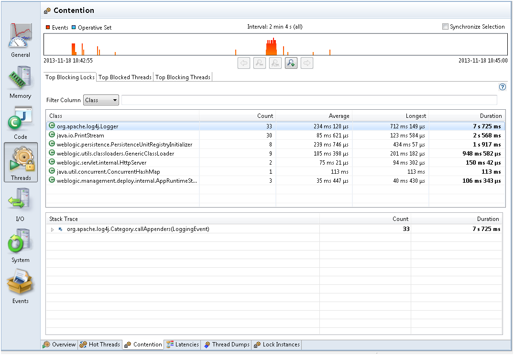

To debug Java Application synchronization issues, or in other words where the application threads spend a lot of time waiting to enter a monitor, look at the Contention tab in the Threads tab group. Take a look at the locks that are contended the most and the Stack Trace of the threads waiting to acquire the lock, as shown in Figure 4-4.
Figure 4-4 Synchronization Performance - Contention Tab
From Figure 4-4, the range selector at the top lets you see where the events took place. Zoom in on the range selector for contention events in the selected time range.
Typically look for contention that you did not think would be an issue. Logging is a common area that can be an unexpected bottleneck in some applications.
When you see performance degradation after a program update or at any specific times in the Java application, take a flight recording when things are good and take another one when things are bad to look for a synchronization site that increases a lot.
Note: The events shown in the range selector are not all synchronization events. By default, contention events with a duration longer than 20 ms are recorded (this threshold can be modified when starting the flight recording). Shorter thresholds give more events and also potentially more overhead. If you believe contention is an issue, then you could take a shorter recording with a very low threshold (only a few milliseconds). When this is done on a live application, make sure to start with a very short recording and monitor the performance overhead.